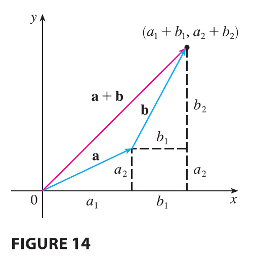
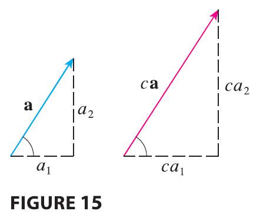

Figure 14 shows that if \(\mathbf{a} = \langle a_1, a_2 \rangle\) and \(\mathbf{b} = \langle b_1, b_2 \rangle\), then the sum is \(\mathbf{a} + \mathbf{b} = \langle a_1 + b_1, a_2 + b_2 \rangle\), at least for the case where the components are positive. In other words, to add algebraic vectors we add corresponding components. Similarly, to subtract vectors we subtract corresponding components. From the similar triangles in Figure 15 we see that the components of \(c\mathbf{a}\) are \(ca_1\) and \(ca_2\). So to multiply a vector by a scalar we multiply each component by that scalar.

If \(\mathbf{a} = \langle a_1, a_2 \rangle\) and \(\mathbf{b} = \langle b_1, b_2 \rangle\), then \[ \mathbf{a} + \mathbf{b} = \langle a_1 + b_1, a_2 + b_2 \rangle \quad \mathbf{a} - \mathbf{b} = \langle a_1 - b_1, a_2 - b_2 \rangle \] \[ c\mathbf{a} = \langle ca_1, ca_2 \rangle \] Similarly, for three-dimensional vectors, \[ \langle a_1, a_2, a_3 \rangle + \langle b_1, b_2, b_3 \rangle = \langle a_1 + b_1, a_2 + b_2, a_3 + b_3 \rangle \] \[ \langle a_1, a_2, a_3\rangle - \langle b_1, b_2, b_3 \rangle = \langle a_1 - b_1, a_2 - b_2, a_3 - b_3 \rangle \] \[ c\langle a_1, a_2, a_3 \rangle = \langle ca_1, ca_2, ca_3 \rangle \]
EXAMPLE 4 If \(\mathbf{a} = \langle 4, 0, 3 \rangle\) and \(\mathbf{b} = \langle -2, 1, 5 \rangle\), find \(|\mathbf{a}|\) and the vectors \(\mathbf{a} + \mathbf{b}, \mathbf{a} - \mathbf{b}, 3\mathbf{b},\) and \(2\mathbf{a} + 5\mathbf{b}\).